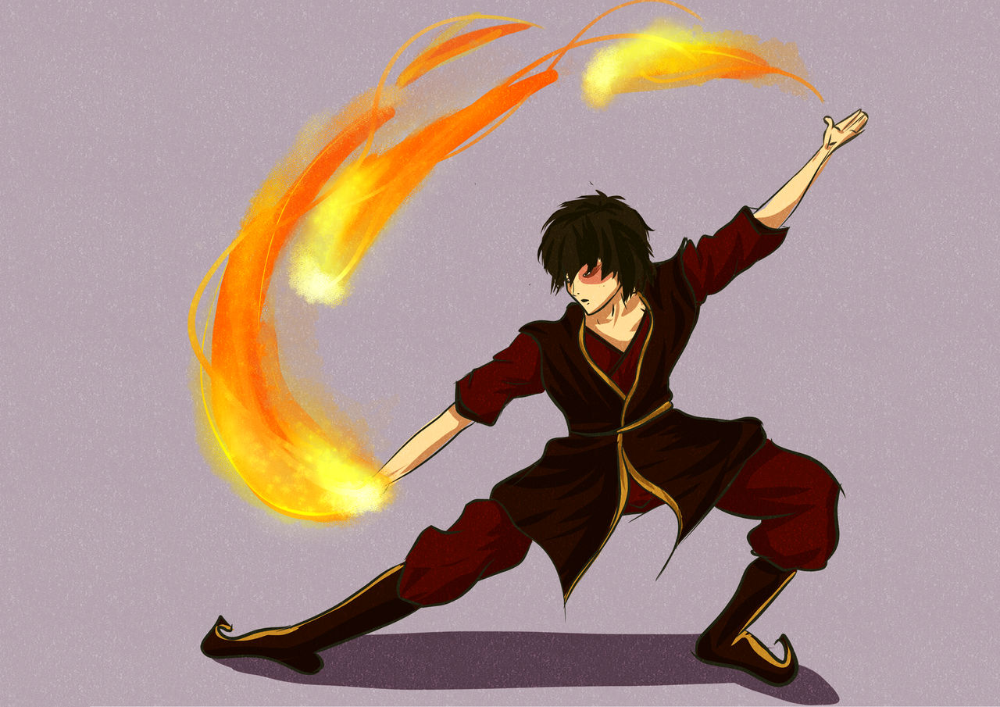

Welcome to Zuko's Fanpage! Here you can learn all about Prince Zuko, the prince of the Fire Nation, from
Avatar: The Last Airbender.

You like Zuko Quotes? We got Zuko Quotes!
"You have to try every time. You can't quit because you're afraid you might fail."
"Hello, Zuko here!"
"That's rough, buddy..."
Here is some information about Zuko's Family!
Name
Relation to Zuko
Good Or Evil?
Iroh
Zuko's uncle, and rightful heir to the throne. He shows unconditional love and support to
Prince Zuko, even after Zuko betrays him.
Good!
Azula
Zuko's sister, and manipulator. She convinces Zuko to betray their uncle with false promises
of unconditional love from their father.
Evil!
Ozai
Zuko's father, and the origin of the daddy issues. Ozai is extremely abusive to Zuko. Ozai
challened 10 year old Zuko to an Agni Kai, or a Fire Duel. This is how Zuko got his scar.
Evil!
Ursa
Zuko's Mother, kind at heart. Ursa disappeared from Zuko's life when he was young. Little
did Zuko know that she banished herself to save her son.